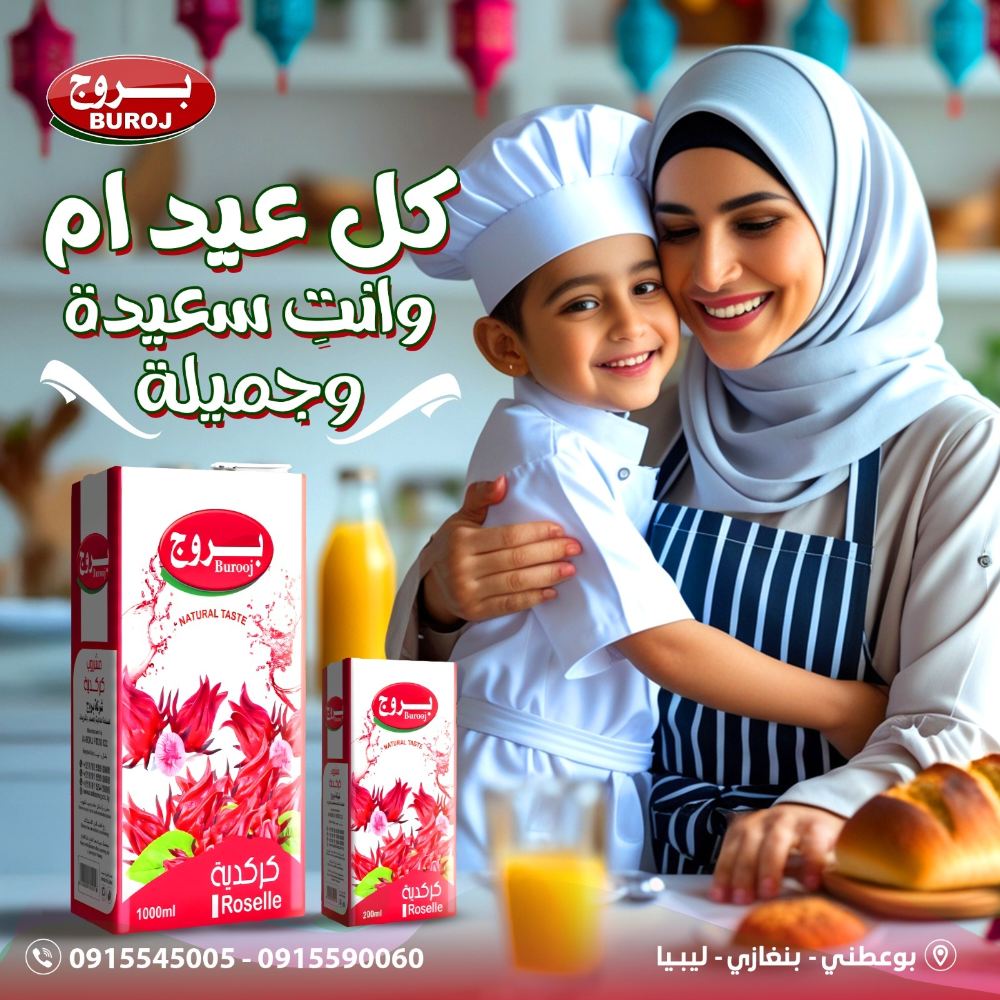
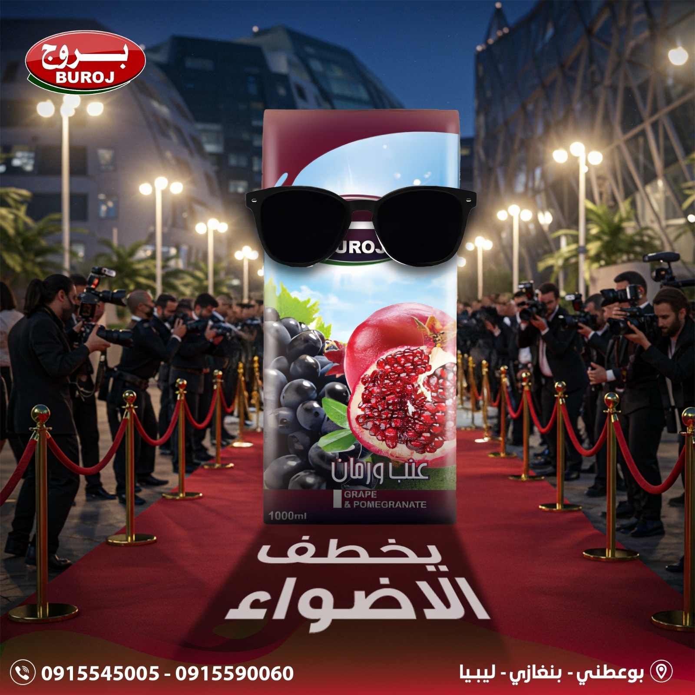
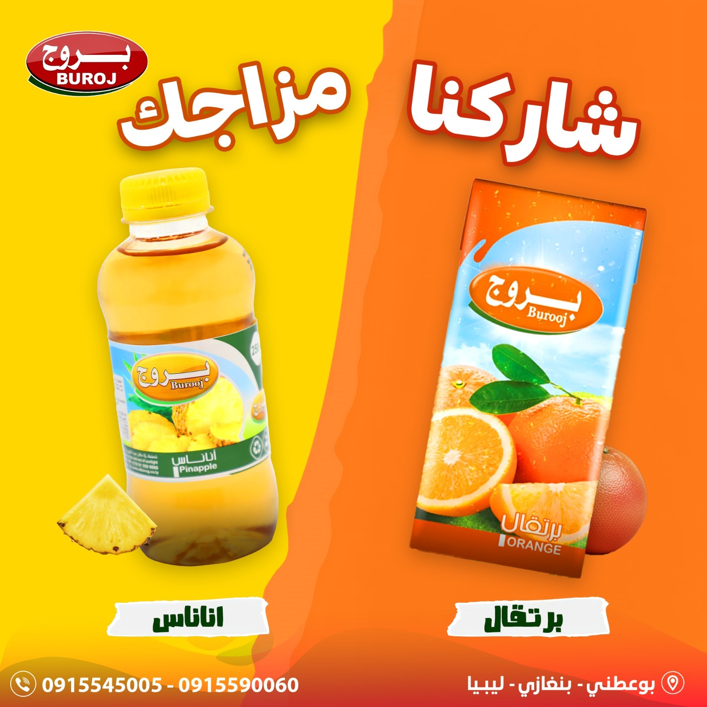
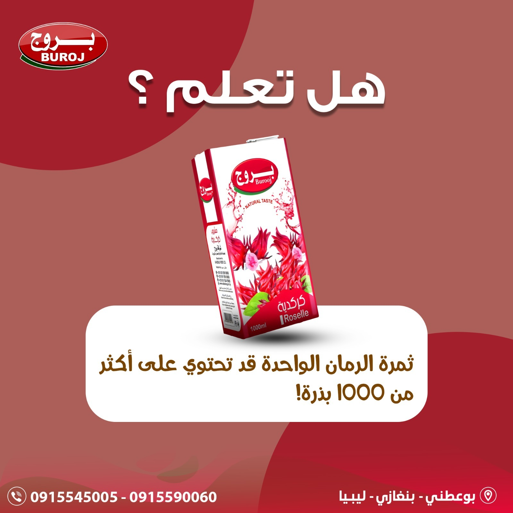
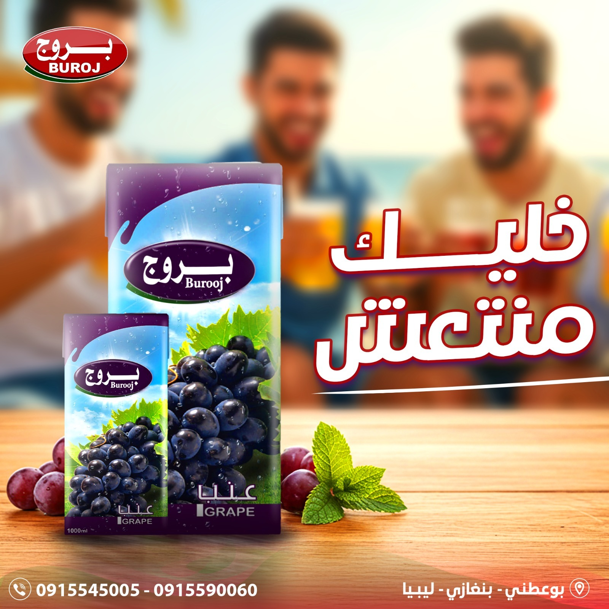

Our Products
Buroj offers a wide variety of juices, beverages and food products that meet the needs of consumers with different tastes, focusing on delicious flavor, high quality and attractive packaging.
1. Nectar Juices
Our nectar juices are made from carefully selected raw materials, with a high fruit content and different sizes for daily and family use:
- Family pack 1100 ml.
- Single pack 180 ml.
A variety of flavors can be offered such as orange, mango, apple, mixed fruits and more.
2. Premium PET Juices
Juices packed in practical PET bottles with a modern design, suitable for daily use and on–the–go:
- Bottle 850 ml.
- Bottle 250 ml.
This category is distinguished by high quality and consistent taste, with the possibility of offering a wide range of flavors.
3. Carbonated & Soft Drinks
Refreshing carbonated beverages in sizes that suit both individuals and families:
- Single bottle 330 ml.
- Family bottle 1500 ml.
This line can include several flavors while maintaining high quality in production and packaging.
Other Food Products
In addition to juices and beverages, Buroj is moving towards developing other food products such as cakes and packed food items, helping to expand the product portfolio and serve a wider consumer segment.
Flexibility in Product Development
Buroj is characterized by high flexibility in adding new flavors, designing special packages according to market or customer needs, and allocating part of production for partnership contracts or private label brands when required.
